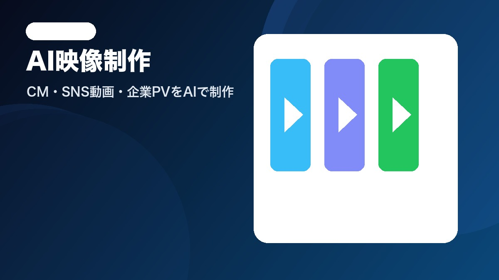
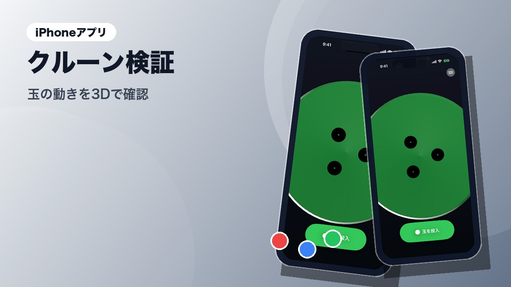
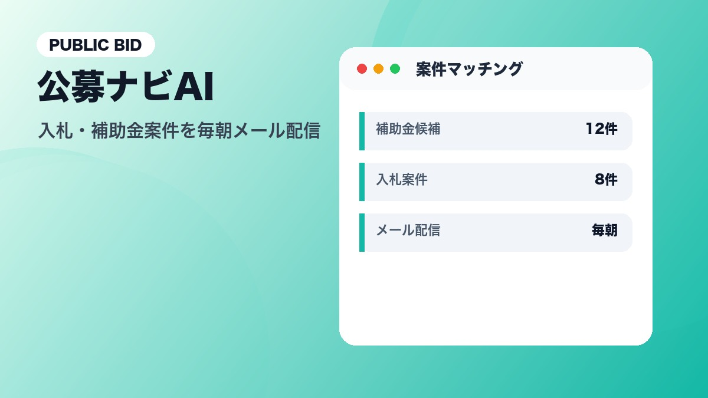
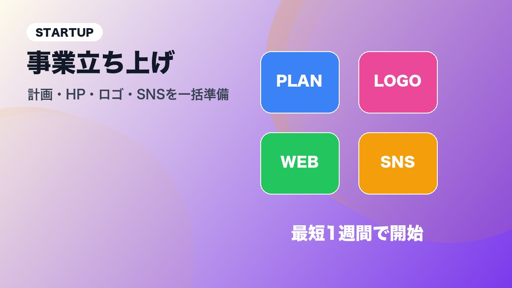
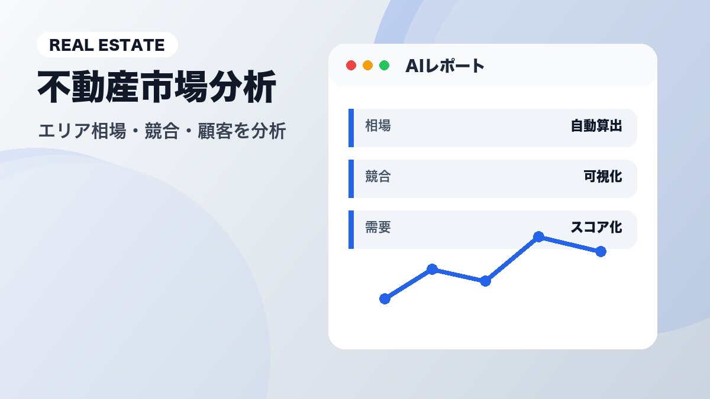
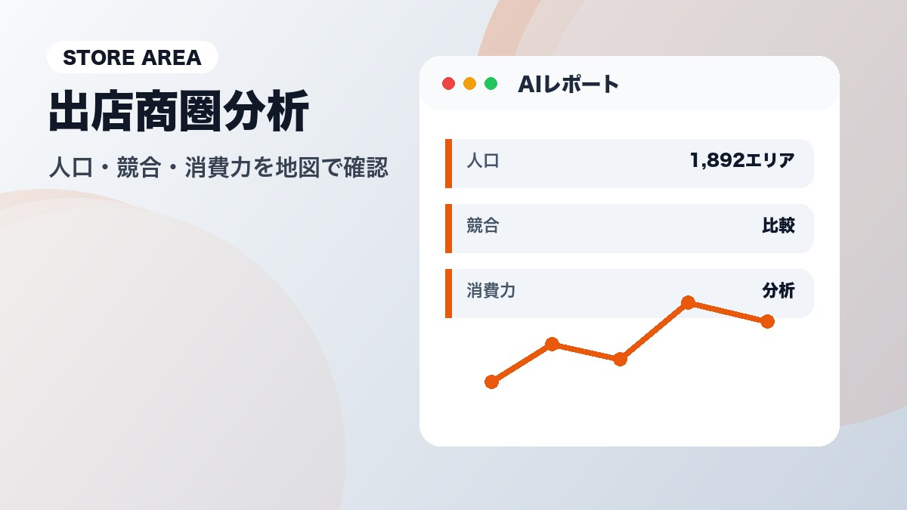

パイプベンダー販売
現場を支える、確かな機械。
産業現場の配管・加工ニーズに応える、高精度パイプベンダーおよび工作機械の販売・導入支援を行います。豊富な機種ラインナップと専門的な技術サポートで、製造現場の生産性向上を実現します。
Business design and AI operations
BANTEX
パイプベンダー、AIサービス、デジタルサイネージを横断し、作って終わりではなく、使われるところまで整える会社です。

導入後の運用、販促、デジタル化までまとめて相談できます。
SNS、HP、商圏分析、映像制作など実務に直結するサービスを展開。
小規模事業者から法人まで、必要な範囲から段階的に支援します。
Featured AI Services

クルーン検証アプリ 3D物理シミュレーターで挙動を確認 LPを見る → ゲキッチャ 回答から抽選参加まで楽しく演出 AI社員 会社専用のAI社員で業務を自動化 X AI自動投稿 ホームページを読んで毎日自動投稿
公募ナビAI 合う公募・入札案件を毎朝届ける OnePage-Flash 入力からLP制作までを短時間化 ココトモ カスタマー LINE対応を24時間AIで自動化
事業立ち上げパック 事業計画からHP・SNSまでまとめる
AI不動産市場レポート エリア分析をレポート化
AI出店商圏レポート 人口・競合・消費力をAIで分析 AI士業商圏レポート 士業の開業適性と競合を見える化Our Business
現場を支える、確かな機械。
産業現場の配管・加工ニーズに応える、高精度パイプベンダーおよび工作機械の販売・導入支援を行います。豊富な機種ラインナップと専門的な技術サポートで、製造現場の生産性向上を実現します。
業務を変える、賢い仕組み。
最新AI技術の導入支援からカスタムAIソリューションの開発・実装まで、企業のデジタルトランスフォーメーションを包括的にサポート。OnePage-Flashをはじめ、様々なAIサービスを展開中。
サービス一覧を見る →空間を活かす、伝わる表示。
店舗・オフィス・施設など様々なシーンで活躍する小型デジタルサイネージの販売・設置サポートを提供。省スペースながら高い訴求力を持つソリューションで、情報発信・ブランディングを効果的に実現します。
詳しく見る →How We Work
現場、集客、業務自動化、情報発信のどこを改善したいかを確認します。
パイプベンダー、AIサービス、サイネージを必要な分だけ組み合わせます。
使い始めてからの調整や追加施策まで、実務に合わせて伴走します。
Company
| 社名 | 株式会社バンテックス BANTEX Inc. |
|---|---|
| 代表者 | 代表取締役 番野政彦 |
| 事業内容 | 総合プロデュースカンパニー パイプベンダー販売 / AIサービス各種 / デジタルサイネージ販売 |
| 所在地 |
〒468-0015 愛知県名古屋市天白区原3丁目304番1号T&Lビル2A |
| TEL / FAX | 052-847-7501 |
| info@bantex.jp | |
| 適格事業者番号 (インボイス) |
T2-1800-0111-7740 |
Contact
ご相談・お見積りはお気軽に
通常1営業日以内にご返信いたします。